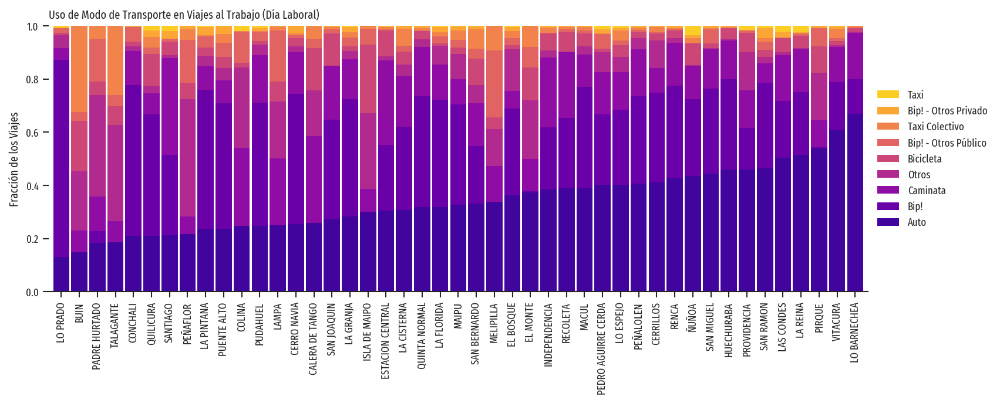
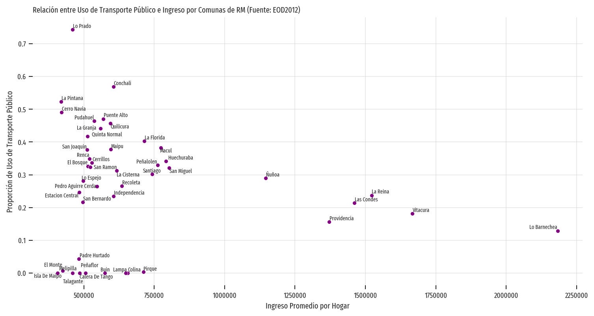
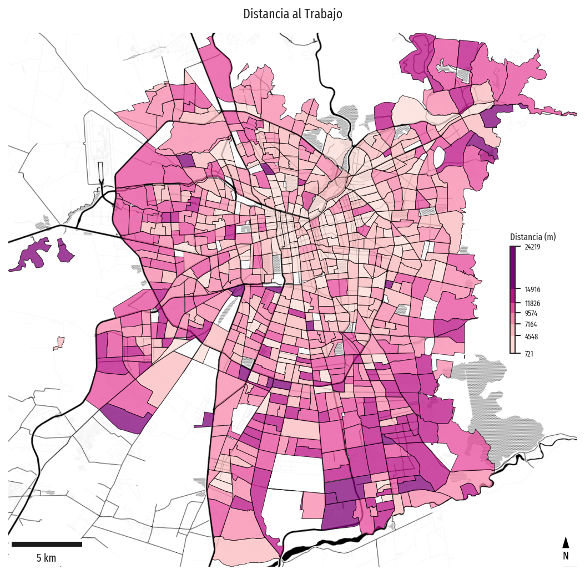
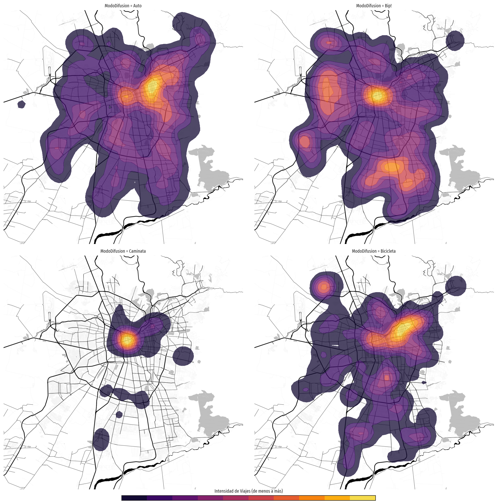
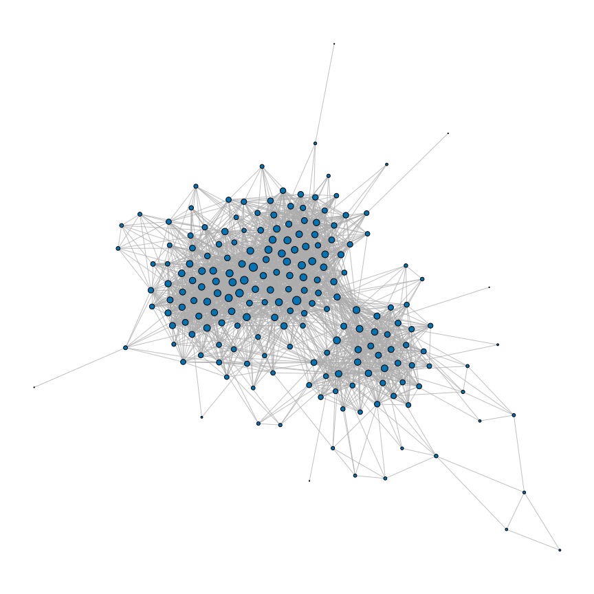
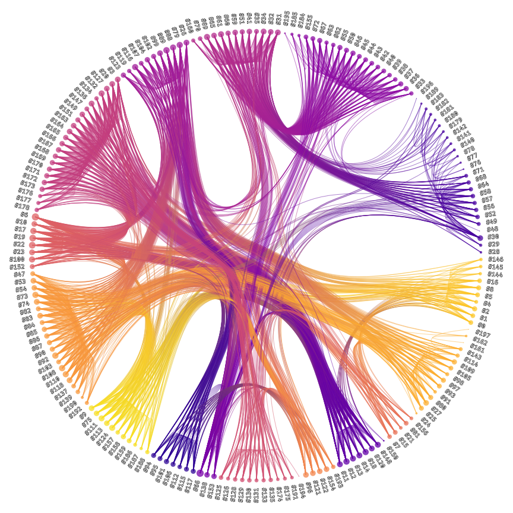
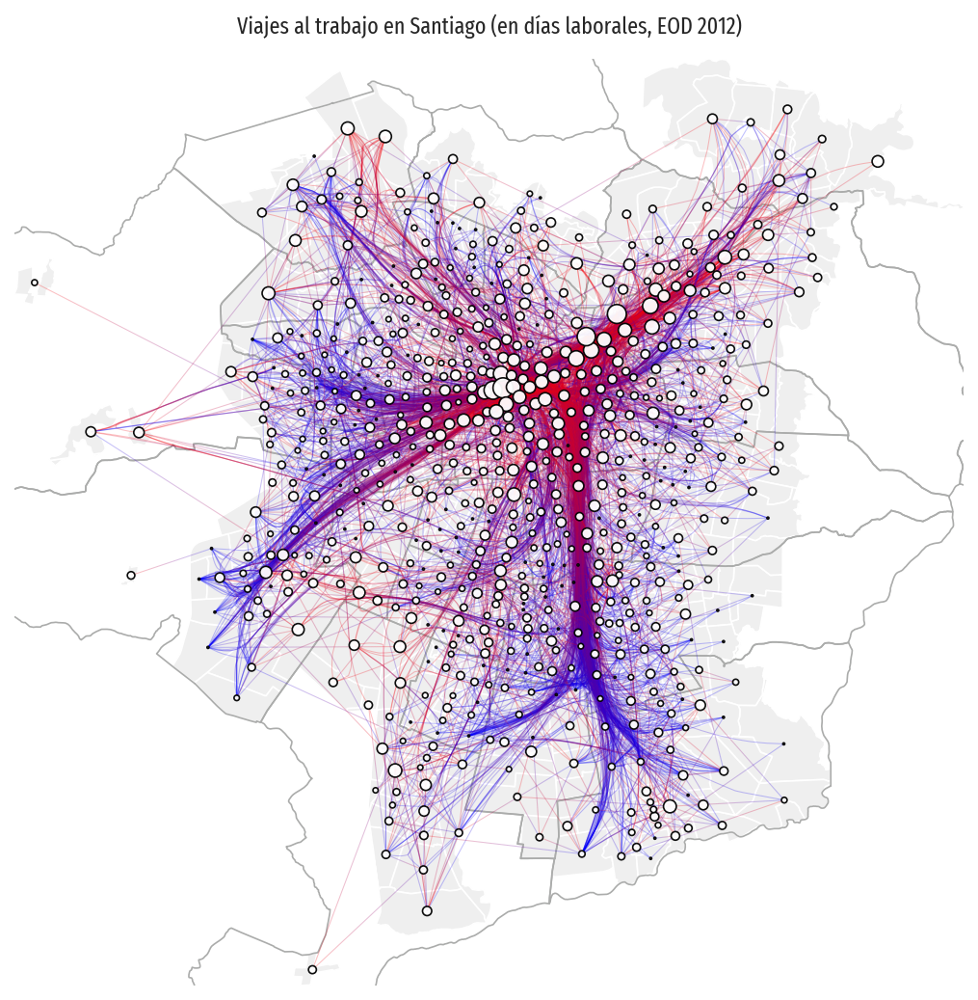
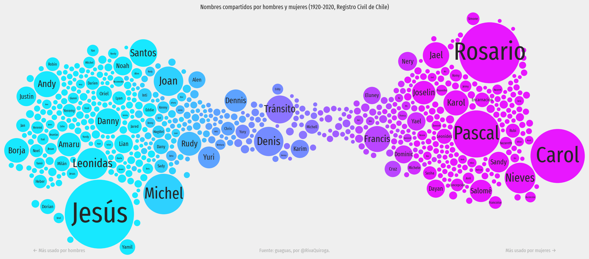

Bienvenidos a aves!
🐦 aves: Análisis y Visualización, Educación y Soporte
Este repositorio contiene datos, código y notebooks relacionados con mi curso de Visualización de Información y mi trabajo diario. Lo he estructurado en un paquete llamado aves, sigla descrita en el título de este documento.
Todavía no existe una documentación exhaustiva para aves, ya que su uso es primariamente interno, pero estos ejemplos muestran cómo se utilizan sus funciones. En lo que respecta a visualización, se mantiene el esquema típico que se utiliza en matplotlib y seaborn, las bibliotecas de visualización de bajo nivel más utilizadas en Python. De cierto modo, aves es un conjunto de herramientas de bajos niveles de abstracción, es decir, utiliza un paradigma imperativo, donde le damos instrucciones específicas al programa (cómo hacerlo); en contraste, una herramienta de alto nivel se enfoca en qué hacer, ocultando los detalles de implementación.
Para comprender la funcionalidad del código puedes explorar la carpeta notebooks. Sin embargo, los notebooks se preocupan de trabajar conceptos que en ocasiones están más allá del alcance de aves, ya que los utilizo en los cursos que dicto. Esos conceptos incluyen trabajar con DataFrames de pandas o utilizar técnicas de visualización implementadas en bibliotecas como geopandas, matplotlib y seaborn (que aves utiliza de manera interna).
Ejemplos
Visualización de Tablas
from aves.visualization import barchart
fig, ax = plt.subplots(1, 1, figsize=(12, 4))
barchart(ax, modo_comuna, stacked=True, sort_categories=True, sort_items=True)
ax.set_title("Uso de Modo de Transporte en Viajes al Trabajo (Día Laboral)", loc="left")
ax.set_ylim([0, 1])
ax.set_xlabel("")
ax.set_ylabel("Fracción de los Viajes")

from aves.visualization import scatterplot
fig, ax = plt.subplots(1, 1, figsize=(12, 6))
scatterplot(
ax,
modo_comuna_ingreso,
"ingreso",
"Bip!",
annotate=True,
avoid_collisions=True,
text_args=dict(fontsize="x-small"),
scatter_args=dict(color="purple"),
)
ax.set_xlabel("Ingreso Promedio por Hogar")
ax.set_ylabel("Proporción de Uso de Transporte Público")
ax.set_title(
"Relación entre Uso de Transporte Público e Ingreso por Comunas de RM (Fuente: EOD2012)",
loc="left",
)
ax.grid(alpha=0.5)
ax.ticklabel_format(style="plain")
sns.despine(ax=ax, left=True, bottom=True, right=True, top=True)

Visualización de Datos Geográficos
from aves.visualization.figures import GeoFacetGrid
from aves.visualization import choropleth_map
grid = GeoFacetGrid(zones.join(distancia_zonas, how="inner"), height=7)
grid.add_basemap("../data/processed/scl_toner_12.tif")
grid.add_layer(
choropleth_map,
"distancia_al_trabajo",
k=6,
linewidth=0.5,
edgecolor="black",
binning="fisher_jenks",
palette="RdPu",
alpha=0.75,
cbar_args=dict(
label="Distancia (m)",
height="20%",
width="1%",
orientation="vertical",
location="center right",
label_size="x-small",
bbox_to_anchor=(0.0, 0.0, 0.9, 1.0),
),
)
grid.add_map_elements()
grid.set_title("Distancia al Trabajo")

from aves.visualization.figures import GeoFacetGrid
from aves.visualization import heat_map
grid = GeoFacetGrid(
origenes_urbanos[origenes_urbanos["Proposito"] == "Al trabajo"],
context=zones,
col="ModoDifusion",
col_wrap=2,
col_order=["Auto", "Bip!", "Caminata", "Bicicleta"],
height=7,
)
grid.add_basemap("../data/processed/scl_toner_12.tif")
grid.add_layer(
heat_map,
weight="PesoLaboral",
n_levels=10,
bandwidth=1000,
low_threshold=0.05,
alpha=0.75,
palette="inferno",
)
grid.add_global_colorbar(
"inferno",
10,
title="Intensidad de Viajes (de menos a más)",
orientation="horizontal",
)

Visualización de Redes
from aves import Network
from aves.visualization import NodeLink
network = Network.from_edgelist(edgelist, directed=False)
nodelink = NodeLink(network)
nodelink.layout_nodes()
nodelink.set_node_drawing(method="plain", weights=network.node_degree("total"))
fig, ax = plt.subplots(figsize=(16, 16))
nodelink.plot(ax, nodes=dict(node_size=150, edgecolor="black", linewidth=1))
ax.set_axis_off()
ax.set_aspect("equal")

from aves import Network
from aves.visualization import NodeLink
network = Network.from_edgelist(edgelist, directed=False)
nodelink = NodeLink(network)
heb = nodelink.bundle_edges(method="hierarchical")
nodelink.set_node_drawing(
"labeled",
radial=True,
offset=0.1,
weights=network.node_degree("total"),
categories=heb.get_node_memberships(1),
)
nodelink.set_edge_drawing(
"community-gradient", node_communities=heb.get_node_memberships(1)
)
fig, ax = plt.subplots(figsize=(12, 12))
nodelink.plot(
ax,
nodes=dict(
node_size=150, palette="plasma", edgecolor="none", alpha=0.75, fontsize="medium"
),
edges=dict(color="#abacab", palette="plasma", alpha=0.5),
)
ax.set_axis_off()
ax.set_aspect("equal")

Visualización de Redes con Contexto Geográfico
from aves.visualization.figures import GeoFacetGrid
from aves import Network
from aves.visualization import NodeLink
zone_od_network = Network.from_edgelist(
matriz_zonas, source="ZonaOrigen", target="ZonaDestino", weight="n_viajes"
)
zone_nodelink = NodeLink(zone_od_network)
zone_nodelink.layout_nodes(method="geographical", geodataframe=merged_zones)
zone_nodelink.bundle_edges(
method="force-directed", K=1, S=500, I=30, compatibility_threshold=0.65, C=6
)
zone_nodelink.set_node_drawing("plain", weights=zone_od_network.node_degree("in"))
zone_nodelink.set_edge_drawing(method="origin-destination")
def plot_network(ax, geo_data, *args, **kwargs):
zone_nodelink.plot(ax, *args, **kwargs)
grid = GeoFacetGrid(zones, context=zones, height=7)
grid.add_layer(zones, facecolor="#efefef", edgecolor="white")
grid.add_layer(comunas_urbanas, facecolor="none", edgecolor="#abacab")
grid.add_layer(
plot_network,
nodes=dict(color="white", edgecolor="black", node_size=100, alpha=0.95),
edges=dict(linewidth=0.5, alpha=0.25),
)
grid.set_title("Viajes al trabajo en Santiago (en días laborales, EOD 2012)")

Frecuencia y Tendencia de Palabras usando Bubble Plots
El dataframe unisex_names se calcula a partir del dataset guaguas (ver sección datasets).
from aves.visualization import bubble_plot
fig, ax = plt.subplots(figsize=(16, 9))
bubble_plot(
ax,
unisex_names.reset_index(),
"tendency",
"n",
label_column="nombre",
palette="cool",
max_label_size=56,
starting_y_range=60, margin=2
)
ax.set_axis_off()
ax.set_title(
"Nombres compartidos por hombres y mujeres (1920-2020, Registro Civil de Chile)"
)
ax.annotate(
"Más usado por mujeres →",
(0.95, 0.01),
xycoords="axes fraction",
ha="right",
va="bottom",
fontsize="medium",
color="#abacab",
)
ax.annotate(
"← Más usado por hombres",
(0.05, 0.01),
xycoords="axes fraction",
ha="left",
va="bottom",
fontsize="medium",
color="#abacab",
)
ax.annotate(
"Fuente: guaguas, por @RivaQuiroga.",
(0.5, 0.01),
xycoords="axes fraction",
ha="center",
va="bottom",
fontsize="medium",
color="#abacab",
)
fig.set_facecolor("#efefef")
fig.tight_layout()

Configuración y Requisitos
Paso 1: Preparación
Si usas Windows, te recomiendo instalar el Windows Subsystem for Linux. Puede ser la versión 1 o 2 (recomiendo WSL2). Como distribución te recomiendo Ubuntu 22.04 (es la que uso yo).
Abre la consola (shell) de Ubuntu y ejecuta el siguiente comando:
Esto instalará algunas bibliotecas que son necesarias para el funcionamiento de aves (particularmente de graph-tool que es usada por aves).
Además, para administrar el entorno de ejecución de aves necesitas una instalación de conda (Miniconda es una buena alternativa) y de mamba. Primero debes instalar conda, y una vez que la tengas, puedes ejecutar:
¿Por qué mamba? Es una versión más eficiente de conda. ¡Te ahorrará muchos minutos de instalación!
Paso 2: Creación del Entorno
Después de descargar o clonar el repositorio (utilizando el comando git clone), debes instalar el entorno de conda con los siguientes comandos:
Ello creará un entorno llamado aves que puedes utilizar a través del comando conda activate aves.
Paso 3: Ejecución en Jupyter
El principal modo de uso de aves es a través de los notebooks de Jupyter.
Es posible que ya tengas un entorno de conda en el que ejecutes Jupyter. En ese caso, puedes agregar el entorno de aves como kernel ejecutando este comando desde el entorno que contiene Jupyter:
Así quedará habilitado acceder al entorno de aves desde Jupyter.
Actualización de Dependencias
Para añadir o actualizar dependencias:
- Agrega el nombre (y la versión si es necesaria) a la lista en
environment.yml. - Ejecuta
conda env update --name aves --file environment.yml --prune. - Actualiza el archivo
environment.lock.ymlejecutandoconda env export > environment.lock.yml.
Créditos
Personas y Contribuciones
- Parte del tiempo dedicado a este código ha sido financiado por el proyecto ANID Fondecyt de Iniciación 11180913.
- La implementación de Force Directed Edge Bundling está inspirada en la versión de Javascript de esa técnica, y fue inicialmente desarrollada por Vera Sativa y luego modificada por Tabita Catalán. Adapté esa versión inicial para que fuese 100% Python y funcionase con el resto de
aves. - El módulo
aves.features.twokenizees una versión modificada de ark-twokenize de Myle Ott. - Este repositorio fue creado gracias al template de Cookie Cutter / Data Science with Conda hecho por Patricio Reyes.
- Gran parte de la funcionalidad de
aveses proporcionada por las bibliotecasmatplotlib,seaborn,pandas,geopandas,contextily,graph-tool,scikit-learn,pysal,scikit-fusiony más. - Para los notebooks de mapas: Map tiles by Stamen Design, under CC BY 3.0. Data by OpenStreetMap, under ODbL.
Datasets
Este repositorio incluye los siguientes datasets:
- Encuesta Origen-Destino, Santiago 2012 (por SECTRA).
- Arenas' Jazz Network.
- Shapefiles del Censo 2017 de Chile para la Región Metropolitana. En este repositorio de Diego Caro pueden encontrar todas las regiones del país.
- Inscripciones de nombres en el Registro Civil de Chile a través del dataset guaguas preparado por Riva Quiroga.
Otros Asuntos
Tipogafías
En los notebooks me gusta utilizar la familia de fuentes Fira Sans y Fira Code. Copia la fuente en la carpeta .fonts de tu directorio principal y luego ejecuta esto en un intérprete de Python o en un notebook:
from matplotlib.font_manager import FontManager; FontManager().findfont('Fira Sans Extra Condensed', rebuild_if_missing=True)
Después de copiar las fuentes, debes eliminar este fichero: ~/.cache/matplotlib/fontlist-v330.json.